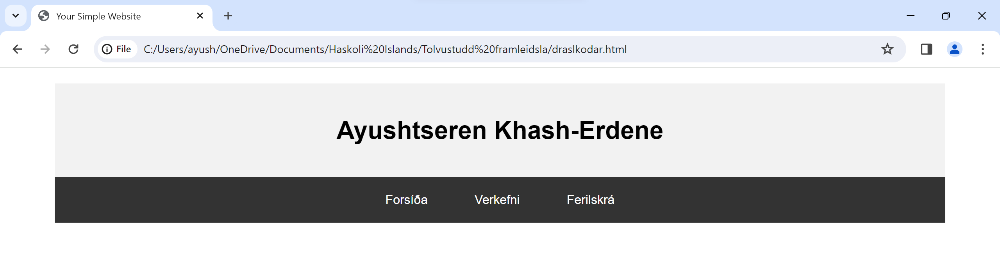

Verkefni 1
Fyrsta verkefnið í áfanganum er að búa til þessa vefsíðu. Við áttum að byrja á því að velja sniðmát fyrir vefsíðuna okkar sem er hægt að hlaða niður frítt frá netinu. Ég ákvað í staðinn að búa til einfalda vefsíðu sjálfur alveg frá grunni með smá hjálp frá ChatGBT til þess að öðlast betri grunnskilningu í vefforitun. Eins og það sést á þessari síðu þá er ekki mjög mikið í gangi. Lykil orðið sem ég hafði í huga við gerð þessara síðu var "einfaldleiki". Það er ekki útilokað að útlit síðunar muni breytast einhverntímann í framtíðinni.
1. Hvernig vefsíðan var búinn til
Ég byrjaði á að búa til gráa kassan með með nafninu mínu fyrst með kóðabútnum hér fyrir neðan
sem lætur síðuna líta út eins og myndinn hér fyrir neðan.
Næst bjó ég til svarta kassana með hnöppunum sem lætur mann fara á milli forsíðu, verkefnis og ferilskrás með því að bæta neðri kóðanum við efri kóðan
sem lætur síðuna líta út eins og hér fyrir neðan.
Síðan bjó ég til dropdown eiginleika fyrir verkefnahnappann sem mun sýna öll verkefninn sem gerð var í áfanganum. Kóðabúturinn fyrir það er sýnt hér fyrir neðan.
Það lætur síðuna síðan líta út eins og hér fyrir neðan.
Þá er vefsíðan í rauninni tilbúinn. Eina það sem eftir er að gera er að skrifa smá texta á forsíðuna og bæta við ferilskrá. Það getur maður séð með því að íta á forsíðu og ferilskrá hnappanna efst uppi á vefsíðuni.
2. Hvað ég vil fá út úr áfanganum og lokaverkefni
Það sem ég vil fá út úr áfanganum er að kunna að nota 3D prentara þannig að ég get notað það til þess að geta hannað hvað sem ég vill.
Hugmyndinn sem ég hef í huga fyrir lokaverkefnið er að búa til bókahilluvélmenni sem réttir manni bókina sem maður vill fá að lesa. Ég er með mjög grófa hugmynd um hvernig ég ætla að fara að því að hanna vélmennið og er ekki alveg að átta mig á hver erfiðastigið á verkefninu gæti verið.
3. Hvernig vefsíðan var hlaðið inn á Github
asdf